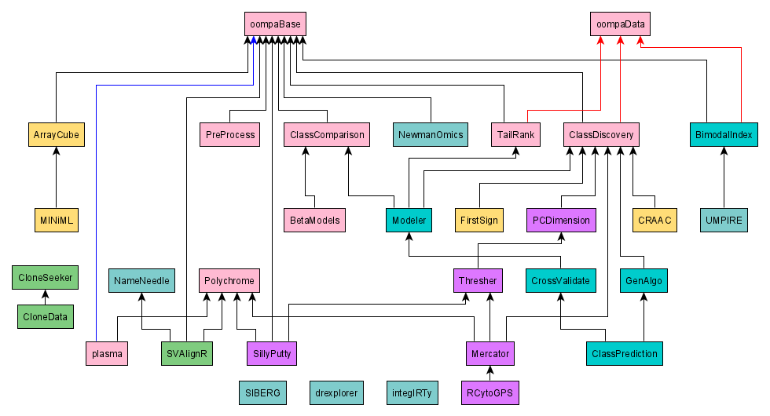

OOMPA
Object-Oriented Microarray and Proteomics Analysis
OOMPA is a suite of R packages for the analysis of gene expression (RNA), proteomics profiling, and other high throughput molecular biology data. OOMPA uses S4 classes to construct object-oriented tools with a consistent user interface. All higher level analysis tools in OOMPA are compatible with the eSet classes defined in BioConductor. The lower level processing tools offer an alternative to parts of BioConductor, but can also be used to enhance existing BioConductor packages.
OOMPA has been a project of the Coombes Lab since at least 2010
Project Overview

This figure shows the dependency relationships between the OOMPA
packages. Black arrows indicate dependendencies reflected by
Depends or Imports entries in the package
DESCRIPTION file. Red arrows indicate a weaker relationship, reflected
by a Suggests entry in the packager DESCRFIPTION file.
An R-Forge "project" can contain multiple packages. We have taken advantage of this structure to organize different packages into different projects. The colors used in the figure indicate the R=Forge project; more details about this organization can be found in the Source Code section below.
Installation
Most OOMPA pacakges have already been submitted to and accepted by CRAN. So, the simplest way to install these packages is to use the standard R facilities (i.e., install.packages) to install R packages along with their dependencies.
Some packages are still only present on R-Forge. To install these packages, you can execute the following command for the appropriate "PKGNAME":
install.packages("PKGNAME", repos="http://R-Forge.R-project.org")
More detailed information is provided below to indicate which packages are already present in CRAN and which packages can still only be found on R-Forge. A handful of packages listed here still exist only on a local hard drive, having not yet reached a development state where they are ready to be moved onto R-Forge. Their status will be updated here as appropriate.
Support
When we moved the source code repository to R-Forge, we set up new discussion forums and other facilities for OOMPA users to obtain help. These include:
Please take advantage of these resources to ask for help, to report bugs, and to request new features for any of the packages in the OOMPA family.
Source Code
The source packages for OOMPA are available from R-Forge. To simplify package maintenance, the packages are separated into multiple projects. The projects are color-coded in the figure above and in the table below.
| Project Name | Project URL | Project Details |
|---|---|---|
| OOMPA | http://r-forge.r-project.org/projects/oompa | OOMPA Packages |
| Class Prediction | http://r-forge.r-project.org/projects/classpred | Classpred |
| Thresher | http://r-forge.r-project.org/projects/thresher | Thresher |
| CloneFinder | http://r-forge.r-project.org/projects/clonefinder | CloneFinder |
| NameNeedle | http://r-forge.r-project.org/projects/nameneedle | NameNeedle |
| SIBER | http://r-forge.r-project.org/projects/siber | SIBER |
| integIRTy | http://r-forge.r-project.org/projects/integirty | integIRTy |
| UMPIRE | http://r-forge.r-project.org/projects/umpire | Umpire |
| NewmanOmics | http://r-forge.r-project.org/projects/newmanomics | NewmanOmics |
| drexplorer | Available from GitHub | |
| ArrayCube | Under Development | |
| FirstSign | Under Development | |
| CRAAC | Under Development | |
| AccuPloidy | Under Development |
License
Licenses for individual packages vary, so you should see their DESCRIPTION files for details. Most current packages are released under Version 2.0 of the Apache License. Older versions of many other packages, are released under Version 2.0 of the Perl Artistic License.
|
|